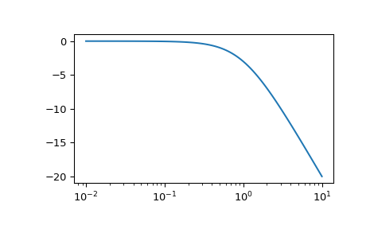
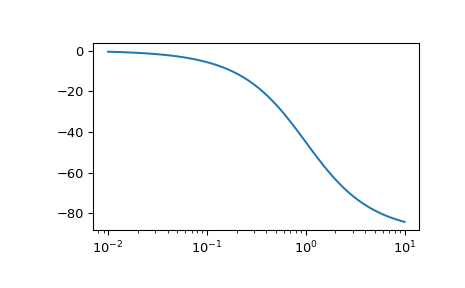

scipy.signal.lti.bode¶
-
lti.bode(w=None, n=100)[source]¶ Calculate Bode magnitude and phase data of a continuous-time system.
Returns a 3-tuple containing arrays of frequencies [rad/s], magnitude [dB] and phase [deg]. See
bodefor details.Examples
>>> from scipy import signal >>> import matplotlib.pyplot as plt
>>> sys = signal.TransferFunction([1], [1, 1]) >>> w, mag, phase = sys.bode()
>>> plt.figure() >>> plt.semilogx(w, mag) # Bode magnitude plot >>> plt.figure() >>> plt.semilogx(w, phase) # Bode phase plot >>> plt.show()
